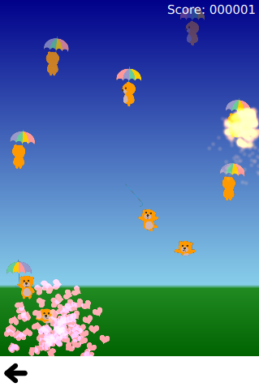

QtQuick Examples - Touch Interaction
This is a collection of QML Touch Interaction examples.

This is a collection of small QML examples relating to touch interaction methods.
Multipoint Flames demonstrates distinguishing different fingers in a MultiPointTouchArea, by assigning a different colored flame to each touch point. The MultipointTouchArea sets up multiple touch points:
The flames are then simply bound to the coordiates of the touch point, and whether it is currently pressed, like so:
Bear-Whack demonstrates using a MultiPointTouchArea to add multiple finger support to a simple game. The interaction with the game is done through a SpriteGoal that follows the TouchPoint. The TouchPoints added to the MultiPointTouchArea are a component with all this logic embedded into it:
Flick Resize uses a PinchArea to allow Pinch-to-Resize behavior. This is easily achieved just by listening to the PinchArea signals and responding to user input.
Flickable is a simple example demonstrating the Flickable element. The element inside the flickable is very big, but the flickable itself is very small:
Corkboards shows a more complex Flickable usecase, with elements on the flickable that respond to mouse and keyboard interaction. This doesn't require special code, the QtQuick elements automatically cooperate with Flickable for accepting the touch events.
Files:
- touchinteraction/touchinteraction.qml
- touchinteraction/flickable/basic-flickable.qml
- touchinteraction/flickable/corkboards.qml
- touchinteraction/flickable/content/Panel.qml
- touchinteraction/multipointtouch/bearwhack.qml
- touchinteraction/multipointtouch/multiflame.qml
- touchinteraction/multipointtouch/content/AugmentedTouchPoint.qml
- touchinteraction/multipointtouch/content/BearWhackParticleSystem.qml
- touchinteraction/multipointtouch/content/ParticleFlame.qml
- touchinteraction/pincharea/flickresize.qml
- touchinteraction/main.cpp
- touchinteraction/touchinteraction.pro
- touchinteraction/touchinteraction.qmlproject
- touchinteraction/touchinteraction.qrc